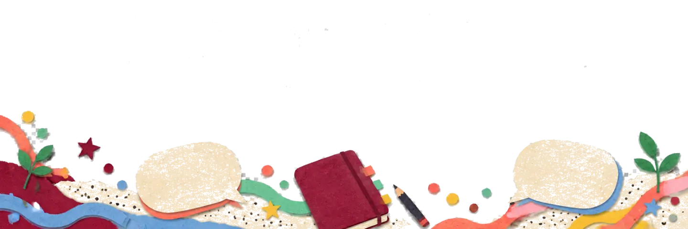

ブログ記事一覧
生成AIリテラシー検定（2026年1月）を受験しました。
生成AIリテラシー認定機構（管理：WHITE株式会社、CBTシステム：MENTER）が実施する生成AIリテラシー検定を受験しました。
台風６号の休校対応について
生成AIによって出力された情報の鵜呑みについて
先日、某野球チームの監督が家庭内の家族トラブルによって警察に逮捕され、その職を辞任するというニュースがありました。
ここで、私にとって衝撃であったのは「通報した娘がChatGPTを使って相談したところ通報するよう教えられ実行した結果、警察が来て逮捕された」というものでした。
当然、如何なる関係性で如何なる理由があったとしても、何らかの暴力を伴う指導や躾は体罰や虐待として許されるべきものではありません。その上で、もしかすると家庭内での一時的な喧嘩でお互い済ませられたかもしれない一件が、ChatGPTへの責任の取れない相談と、それを全て鵜呑みにして実行したことによって双方にとって取り返しのつかない事件になったということは、生成AIリテラシーの必要性を日々感じている私としてはその主張が更に強くなる一件でありました。
ITパスポート試験に合格しました。
IPA 独立行政法人 情報処理推進機構が実施する、ITパスポート試験（4月実施）に合格しました。
第63回 本庄～早稲田 100キロハイクを経て
第63回 本庄～早稲田 100キロハイクに参加しました。
本イベントは、早稲田三大行事の一つに数えられる「悪ノリ」であり、早稲田本庄高等学院のある埼玉県本庄市から丸2日間かけて早稲田大学早稲田キャンパスのある東京都新宿区まで歩くだけのイベントです。
主催は「早稲田精神昂揚会」で、早稲田精神とは何か、を常に問い続けながら様々な活動を行っている歴史のあるサークルです。
２日間かけて歩いた感想としては、とにかくきつかったです。２日目の最後こそアドレナリンで気合で歩き続けられましたが、１日目の３区ナイトハイクでは埼玉の暗く細く足元の悪い山道を雨の中ひたすら歩き続け、何度も心が折れそうになりました。
長い人生における、（自発的な）試練の一つを乗り越えた貴重な経験になりました。
東京ビッグサイトにて開催された第17回教育総合展 EDIXに参加しました。
東京ビッグサイトにて開催された第17回教育総合展 EDIXに参加しました。
昨年度も参加させていただきましたが、教育を技術の場から支え発展しようとされている企業の皆様方から刺激を受ける、貴重な機会でした。近い将来、教壇に立ち実践者になる私にとって、こうした外部の教育業界の方々との協働の必要性も強く感じました。
特に、ツールをただ学校に導入するのではなく、目の前の児童生徒の実態から課題を見つけ、業者の方々の思いと個々のニーズを合わせて実施していこうと思いました。
また、今回は参議院議員としてAIを中心に第一線でご活躍されている安野貴博さんの講演会にも参加しました。AIの専門家としての立場から、今現在、そして今後の教育において求められるものについてのお話を聞くことができました。
今後も引き続き、こうした外部の学びの場に積極的に参加していきます！
思考のタイプについて
現在、学校臨床実習における実践の内容を同じ院生と話しながら試行錯誤しています。そこで、たった今みんなと思いついた思考のタイプ（型）を以下に記します。
I型思考、O型思考、人型思考、T型思考です。
I型思考→一部に限った課題に対して、同じく一部に限った実践を行い明らかにしていくもの。
O型思考→幅広い課題に対して、同じく幅広い実践を行い明らかにしていくもの。
人型思考→狭い課題に対して、幅広い実践を行い明らかにしていくもの。
T型思考→幅広い課題に対して、その中でも一部を選択して明らかにしていくもの。
以上です。実習や研究においては、「狭すぎではないか」「広すぎではないか」という指摘が往々にしてされます。そこで大切なことは、上記にまとめた思考のうちの「T型思考」なのではないかと思います。
社会全般における広い課題は、需要が高い課題であることを示すと考えます。その上で、限られた時間や環境に合わせて焦点化を行い、明らかになっていく。
この考えから、T型思考で実践と研究を進めていきたいと思います。
生成AIとの付き合い方について
私はこの２年間の大学院生活において「生成AIの教育利用」ということを軸に日々学んでいる立場です。
しかし、そんな立場にあるからこその悩みとして、「生成AIとの適切な付き合い方」というものがあります。
先月12日、とある方のご厚意により月額16,000円のclaude maxプランの体験をさせて頂ける機会を得ました。生成AIを軸に学んでいる、かつ金銭的な事情から高性能AIのサブスクをためらっていた、という状況だった私にとってはこの上ない貴重な機械で、日々X等で最新の情報を取得しclaude codeを用いたアプリ開発や、opus4.7という最新のAIを最大限活用してリサーチや資料作成を行っていました。
しかしながら、あまりに技術革新が激しく、また今年に入ってclaude codeをはじめとした自律型のAIエージェントが進んでいることもあり、自分の存在価値に疑問を抱くようになりました。リサーチなどをお願いされたとしても、自分が時間をかけてやるよりもAIを用いたほうが何倍も早く正確な情報を取得し効率よく質の高い形で出力できるという事実に対して、自分は何をやっているのだろうという気持ちがここ数日で特に強くなってしまいました。
丸投げをしない、AIリテラシー教育についても考えている私がいつしか最初に丸投げを行って、自分自身はその後に微調整をしているだけの存在になってしまっていました。
なお、今日でclaudeのプランは消えてしまったのですが、私の「AIリテラシー」についてのレポートをclaudeに作ってもらいました（設定の欄にその項目があります）。以下にその概要を記します。
『目標と背景を丁寧に提示してから依頼する姿勢が際立っています。「私は、日本の小学校の社会科の教員です。児童が作成する社会科のレポートの成績づけをしたいので」のように、役割・目的・対象学年を最初に明示する習慣が一貫しています。形式指定（docx・箇条書き・700字）やトーン指定（「難しい表現はやめて」）も的確で、反復的な修正を通じて出力を磨く力も強い。Projects・Research・Artifactsを高頻度で活用しており、目的別に使い分けています。次のステップとして、AIの推論の穴を言語化して指摘する練習と、会話をまたいで文脈を記憶させるMemory機能の活用が、研究の継続性をさらに高めるでしょう。』
果たして、AIというツールに丸投げをせずに、効率や質が悪くとも可能な限り自分の力で考えることにより今後の私の研究やアウトプットがどう変わるのか、実証していきたいと思います。
都内某中学校への授業参観を経て
2026年5月7日、院生の紹介と担当の先生のご協力の元、都内の某中学校へ授業参観の機会を与えていただきました。
そこでまず感じたことは、生徒がお互いをリスペクトし合っている様子です。本中学校は全員が中学入試を突破した生徒であり、学力が極めて高い集団が作られていました。しかし、そのような環境にも当然一人一人の強い個性があり、授業中も複数人の集団で協力しながら取り組んでいる生徒や、ペアで取り組んでいる生徒、1人で黙々と取り組んでいる生徒がそれぞれいました。
ただ、1人で黙々と取り組んでいる生徒は決して孤立しているわけではなく、少し悩んだ様子を見せた後に別の生徒のところへ助けを求めたり状況を確認したりするといった行動が見られました。
これらの要因としては、やはり個々のリスペクトが根底にあるのではないかと思いました。お互いが同じような試練を突破したという揺るぎない事実がリスペクトを生み、いい距離感で学び合いを行っていることにつながっていると考察しました。
今後も様々な学校を見学させていただき、参観者だから見える子どもたちの姿を見て自分の学びにしていきたいと思います。
第10回サムライフェスにボランティアで参加しました。(福島県南相馬市)
毎年参加している院生の紹介で、福島県南相馬市で行われたサムライフェスにボランティアとして参加させていただきました！
サムライフェスは、雲雀ヶ原祭場地を舞台に、戦国合戦 口上「南相馬矢野目の戦い」をはじめとする様々な催しが行われる地域イベントです。10回目の開催となる今回は、私たち院生も複数名参加し、その運営の一端を担わせていただきました。
前日は、会場設営に加え、原町生涯学習センター（サンライフ南相馬）にて事前説明会とキャリア相談会に参加しました。
相談会は、ボランティアに参加している地元の高校生を主な対象としたもので、聖心女子大学の皆さん、NPO法人日本教育再興連盟
（ROJE） つぼみプロジェクトの皆さん、そして私たち院生が、それぞれの立場から進路や学びについてお話ししました。
私は地方出身者として、大学進学に限らない多様な進路のあり方や、進学・就職先となる地域の選び方などを中心にお伝えしました。実際に高校生と話してみると、既に方向性が定まっている人も、これから模索していく人も、それぞれ自分なりの考えや思いを持っており、その姿勢にとても感心しました。彼ら彼女らを応援するとともに、私たち自身も院生として、また来年度から教員となる者として、より一層努力していきたいと感じました。
当日は、会場の最終準備と各ブースでの受付対応を担当しました。
子どもから大人まで、また国内外から多くの方々が来場され、対応に追われる場面もありましたが、それも含めて非常に有意義な時間を過ごすことができました。こうしたイベントの活力は、何より参加者の方々が楽しそうにされている姿や笑顔にあるのだと強く感じました。特に「子供合戦」では、多くの子どもたちが保護者の皆様の応援のもと元気よく活動しており、こちらも大いに力をもらいました。
サムライフェスの終盤には、私たちも甲冑を着て合戦に参加させていただきました。初めての貴重な経験を多くさせていただき、本当にありがとうございました。
教員になると、校内行事や地域と連携したイベントを企画・運営する機会があると思います。今回の経験を通じて、こうしたイベントが多くの協賛者・協力者、そして参加者の支えによって初めて成り立つものだと改めて実感し、その運営の在り方を学ばせていただく貴重な機会となりました。今後のサムライフェスのますますのご発展、また南相馬市の更なる賑わいを心より願っております！
7/22-24 早稲田大学教職大学院 佐賀ツアーを主催します。
7月23日の佐賀大学附属小学校 公開研究会に合わせて、7/22-24に早稲田大学教職大学院の院生を連れて佐賀ツアーを行います！
早稲田大学創立者の大隈重信ゆかりの地で学びを深められることを楽しみにしています！
一般社団法人ここから未来シンポジウム「「指導死」誕生から20年目を迎えて～学校は安全な場所になったのか〜」 に参加しました。
他教職大学院の方の紹介で、一般社団法人ここから未来さんのシンポジウム
「「指導死」誕生から20年目を迎えて～学校は安全な場所になったのか〜」
に参加させていただきました。
https://cocomirai.jp/post-1581/
指導死親の方から直接お話を聞かせていただき、教育に関わる全ての人が、子どもの命を第一に考えて行動に取らなければならないことを改めて感じました。
今後も、こうした当事者の方々との直接的な関わりを通して、教育において絶対的に必要な事柄を学び、他の方々に繋げていくための活動を進めていきます！
LinkedInを始めました
LinkedInを始めました。以下のURLからつながり申請等お願いします！https://www.linkedin.com/in/%E7%B4%80%E5%96%9C-%E6%9C%A8%E6%9D%91-0133293b9/
以下に、初回の投稿文を掲載します。
はじめまして。早稲田大学教職大学院2年の木村紀喜と申します。2027年4月から、佐賀県の小学校教諭として教壇に立ちます。
このLinkedInでは、佐賀県や教育に関心をお持ちの方々と繋がり、学び合いたいと思っています。
私の先祖は佐賀県唐津市に生まれ、唐津くんちに深く関わってきました。これは私にとって揺るぎないアイデンティティで、祭りを通じて受け継がれてきた誇りと絆が、今の私の教育観の基盤となっています。
佐賀県は、全国的には必ずしも注目を集める地域ではなく、人口減少や学力低下などの課題を多く抱えています。
しかし、近代佐賀県には誇るべき歴史と精神があります。日本の礎を築いた先人たちの力と強い思いに満ちています。
私が目指すのは、子どもたちに多様な経験を提供し、それらを繋げながら、広い視野から前向きに物事を考えられる力を育てる教師です。特に大切にしたいのは、一人ひとりが「自分にしかできないこと」を見つけ、それに誇りを持って全力を注げるよう支援することです。
それは必ずしも大きな夢や野心的なキャリアである必要はありません。
与えられた仕事を真摯にこなすことでも、家族を大切にすることでも、自分の人生を豊かにする何かでも構いません。
大切なのは、自分のアイデンティティを見つけ、前向きに生きる力を持つこと。そして、その前向きさを育むには、幅広い視野が不可欠だと考えています。
全員が私のような地元貢献を志すわけではありません。生まれた地をアイデンティティとする人が東京をはじめ様々な場所で幅広い知見を得て、それを地元に還元していく。
あるいは、そうでない人も自分のアイデンティティを探すために前向きに様々な場に出ていく。
これからの時代に「安定」はないからこそ、こうした姿勢が重要だと思うのです。
私には、唐津のアイデンティティと早稲田での現在、そして佐賀県教員としての未来があります。この3つを繋げられるのは私だけ、だと考えています。
佐賀県の教育、地域教育、キャリア教育などに関心をお持ちの方々との対話から学びを深めていきたいと思います！
自治会の防災講座に参加しました。
私が現在住んでいる学生寮と関わりのある、地域の自治会の防災講座に参加させていただきました。
この自治会は高齢の方が多数所属されており、災害等の非常事態時への不安があることから、すぐに実践できるわかりやすい防災講座を実施されていました。
私は学生の身として、この自治会の防災マップの作成を通じて少しでも力になりたいと思っております。
旧石巻市立大川小学校を訪れて
2026年3月11日、東日本大震災から15年が経った今日、震災遺構となっている旧大川小学校を訪れました。
私が入学した小学校が福岡県にある大川小学校という同じ名前の学校であり、震災当時は小学２年生だったため、距離は遠くとも関係を感じていました。
そこから１５年。実際に校舎や裏山を目の前にし、かつ３月１１日だったということもあり遺族の方々を見て、自分が教員になった際の一番の優先事項は子どもたちの命を守ることだと強く思いました。